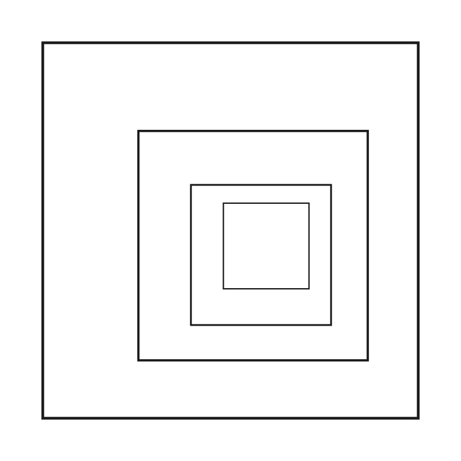
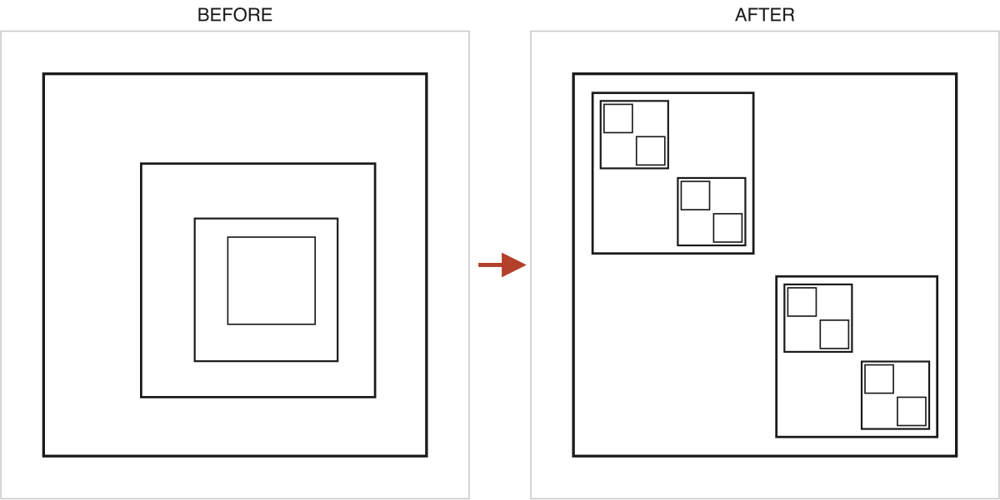
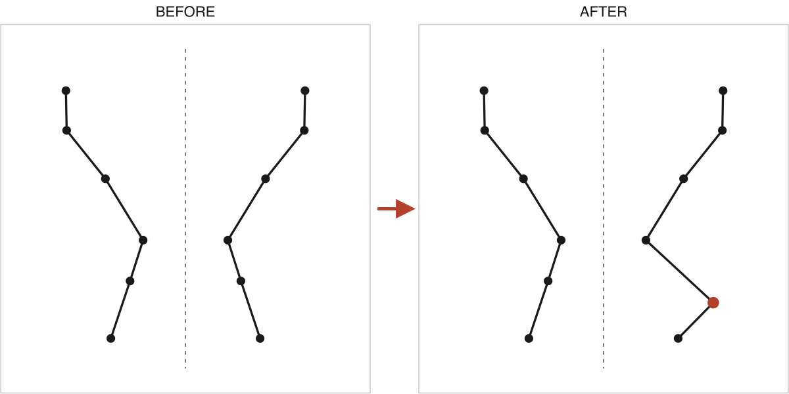
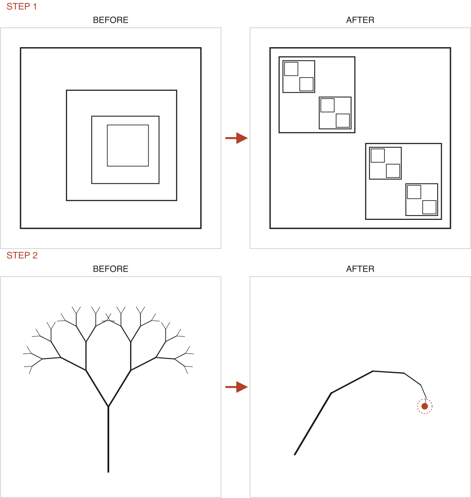

Does recognizing a structure mean you can move it?
A pilot extension of GEB-Bench. A model sees a structural change g (BEFORE→AFTER, a minimal edit of one drawing program) and must apply the same g to a structure given in another voice — a theorem or a story. Recognizing both endpoints is not the same as transporting the morphism between them.
Headline: across six vision models, detecting a change is easy (id-vs-change genuine-edit 75–97%) and transporting it in the theorem voice works for the five frontier-tier models (56–89%), but transport in the story voice collapses toward the floor (22–53%, four of six at chance, 25% chance). The mapping tax from the main paper reappears at the level of morphisms, and it is sharpest where the target is narrative.
The five task types, with real items
endpoint_id
Recognition baseline — name the motif in a single diagram (25-way, chance 4%). This is the denominator: every “recognizes it but can’t move it” claim is conditioned on this.

Exact prompt
This diagram depicts an abstract structural motif. Pick the motif it depicts from the options below.
Options:
{menu}
Output JSON only: {"motif_id": "..."}Answer: nesting
| GPT-5.5 | GPT-5.2 | Claude Opus 4.8 | Gemini 3.1 Pro | Kimi K2.5 | Qwen2.5-VL-72B |
|---|
| 81% | 75% | 58% | 74% | 71% | 57% |
square_thm
Naturality square, theorem voice. See the change g in the picture (nesting → recursion), then apply the same g to a structure given as a masked theorem. The four options are the true theorems of four formally-adjacent motifs.

Exact prompt
The image shows one structural change applied to a diagram: the BEFORE panel on the left, the AFTER panel on the right. Call this change g.
The mathematical theorem below (some proper names masked with □) characterizes the structure of the BEFORE panel. Exactly one of the four theorems that follow characterizes the structure you would get by applying the SAME change g to it. Pick that one.
Theorem for the BEFORE structure:
{text}
{options}
Output JSON only: {"choice": "one of A-D"}Cantor's □ closed interval theorem: If a sequence of bounded closed intervals satisfies [a_{n+1}, b_{n+1}] ⊆ [a_n, b_n] for every n, then ⋂_{n≥1}[a_n, b_n] is nonempty; if, in addition, b_n − a_n → 0, then the intersection is exactly the singleton {ξ}, where ξ = sup_n a_n = inf_n b_n.
[A] infinite_descentFermat (his account of the method appears in a 1659 letter to Carcavi; the full proof survives in marginal note 45 to his copy of Diophantus's Arithmetica, published by his son Samuel in 1670): a right triangle with integer side lengths cannot have square area — proved by infinite □; consequently, x^4+y^4=z^2 has no positive integer solutions, and therefore x^4+y^4=z^4 has no positive integer solutions (the n=4 case of Fermat's Last Theorem).
[B]✓ answer recursionDyck words of length 2n, full binary trees with exactly n internal nodes, and triangulations of a convex (n+2)-gon are three families of objects all counted by the Catalan number C_n=\binom{2n}{n}/(n+1) (Euler–Segner enumeration; see Stanley, Catalan Numbers), and there are explicit bijections between each pair.
[C] strange_loopA directed graph admits a vertex ordering in which every arc points from an earlier vertex to a later one if and only if it has no directed □ (the basic theorem). Hence the feedback arc set of the above layered graph is nonempty; moreover, after deleting e*, the whole graph has no directed □, so the minimum feedback arc set of the original graph has size exactly 1, and {e*} is a minimum feedback arc set.
[D] self_referenceKleene's Second □ Theorem (1938): for every total computable function f, there exists an index e such that φ_e = φ_{f(e)}; corollary: in any Turing-complete programming language with an acceptable numbering, there exists a program that □ (a □).
Answer: B (recursion)
| GPT-5.5 | GPT-5.2 | Claude Opus 4.8 | Gemini 3.1 Pro | Kimi K2.5 | Qwen2.5-VL-72B |
|---|
| 89% | 83% | 56% | 58% | 56% | 31% |
square_story
Same square, story voice — with an identity trap. Option [A] retells the unchanged BEFORE structure in a new setting; picking it means the model mistook a surface change for the structural one.

Exact prompt
The image shows one structural change applied to a diagram: the BEFORE panel on the left, the AFTER panel on the right. Call this change g.
The short story below is told in a way that realizes the same structure as the BEFORE panel. Exactly one of the four stories that follow is told in a way that realizes the structure you would get by applying the SAME change g to it. Pick that one. (Beware: one of the options realizes the unchanged BEFORE structure in a different setting.)
Story for the BEFORE structure:
{text}
{options}
Output JSON only: {"choice": "one of A-D"}1. Old Mara baked oat buns by the station and sold them to neighbors with a smile.
2. Little Ben carried a red cloth bag and bowed to Mara when the train bells rang.
3. At dusk Mara gave Ben the last warm bun, and he shared it with a tired dog.
4. Little Ben carried a red cloth bag and bowed to Mara when the train bells rang.
5. Old Mara baked oat buns by the station and sold them to neighbors with a smile.
[A]identity trap symmetry1. Mara set a blue teapot on the hob and smiled as the rain tapped the window.
2. Her son Eli brought two mugs and asked for honey in his tea.
3. At dusk, the old kettle sang softly while Mara told Eli that a shared cup tastes best.
4. Her son Eli brought two mugs and asked for honey in his tea.
5. Mara set a blue teapot on the hob and smiled as the rain tapped the window.
[B]✓ answer symmetry_breakingAt dawn, wind brushed Tilly's hilltop dairy. Grandmother Mara heard wind rattle milk pails. She told Tilly, wind favors patient hands. Together they churned while wind teased rafters. A brown calf followed wind through clover. Tilly laughed, letting wind cool her forehead. By noon, one blue bowl stood utterly still. Mara carried bread as wind warmed it. Soon wind carried butter's sweetness downhill softly. Neighbors came, thanking wind and kindly Tilly. That evening, wind sang under silver stars. Tilly kept the bowl when wind returned.
[C] interference① On a rainy evening Mara found two shells in the shed.
② She carried them to the kitchen and set them by the hearth.
③ Again Ben brought his tin whistle from the shelf.
④ At dusk the clock sang: soft ticks beside the fire for us.
⑤ Ben laughed and blew one clear note from the yard.
⑥ Again Mara answered with her spoon against the bowl.
⑦ The goat lifted its head and blinked at the sound.
⑧ Ben struck the spoon on the rail: bright notes ran under the rafters again.
⑨ Again the two sounds met and made children grin.
⑩ Old Nessa brought honey cakes for the weary pair.
⑪ They ate beside the door while rain tapped the thatch.
⑫ Again Mara and Ben listened near the stove: the notes met there and smiled softly.
⑬ After that, Nessa asked for one more song.
⑭ Ben tried a low hum and the cat yawned wide.
⑮ Again the spoon and whistle shared the doorway light.
⑯ The children stepped into the yard: fireflies danced above the wet grass tonight.
⑰ A frog called from the ditch beside the gate.
⑱ Again Ben found the tune hiding under his breath.
⑲ Mara hung the kettle and watched the steam curl up.
⑳ The old dog settled by the ashes: his tail thumped once then rested quietly.
㉑ Again Nessa sang a wordless line to the crows.
㉒ The crows leaned on the fence and bobbed their black heads.
㉓ Ben laughed and said the night had grown kinder.
㉔ Again the three of them heard one clear answer: the yard held both songs and more.
[D] figure_groundAlice carried a blue tin pail beside Beth at dawn. Alice picked the rosy apples above Beth while the grass shone with dew. Alice shared warm oatcakes with Beth under the bent tree. Alice sang a gentle thanks to Beth as the sun climbed over the orchard wall. Beth carried a willow basket beside Alice at dawn. Beth picked the fallen apples below Alice while the grass shone with dew. Beth shared cool cider with Alice under the bent tree. Beth sang a gentle answer to Alice as the sun climbed over the orchard wall.
Answer: B (symmetry_breaking)
| GPT-5.5 | GPT-5.2 | Claude Opus 4.8 | Gemini 3.1 Pro | Kimi K2.5 | Qwen2.5-VL-72B |
|---|
| 53% | 36% | 31% | 33% | 44% | 22% |
id_vs_change
Equivariance vs invariance. One option is always “no structural change, only rendering parameters differ” — half the items are true nuisance twins where that is the answer.
Exact prompt
The image shows two diagrams: BEFORE on the left, AFTER on the right. Exactly one statement below correctly describes the relationship between them. Pick it.
{options}
Output JSON only: {"choice": "one of A-D"}[A]No structural change: the two figures realize the same structure and differ only in rendering parameters (counts, sizes, angles, placement).
[B]The flat ring is re-laid across levels, so following the arrows climbs a hierarchy and still returns to the start.
[C]✓ answerExactly one of the mirrored correspondences is destroyed.
[D]The same two tiles obey the same local rule but the translation period is destroyed.
Answer: C
| GPT-5.5 | GPT-5.2 | Claude Opus 4.8 | Gemini 3.1 Pro | Kimi K2.5 | Qwen2.5-VL-72B |
|---|
| 93% | 93% | 92% | 88% | 67% | 64% |
composition
Two-step composition. Apply STEP 1 then STEP 2. A distractor encodes “stopped after STEP 1” — the classic partial-transport failure.

Exact prompt
The image shows two structural changes, one per row: STEP 1 (its own BEFORE and AFTER) and STEP 2 (its own BEFORE and AFTER).
The mathematical theorem below (some proper names masked with □) characterizes a starting structure. Apply STEP 1's change to it, then apply STEP 2's change to the result. Exactly one of the four theorems that follow characterizes the final structure. Pick it.
Theorem for the starting structure:
{text}
{options}
Output JSON only: {"choice": "one of A-D"}Cantor's □ closed interval theorem: If a sequence of bounded closed intervals satisfies [a_{n+1}, b_{n+1}] ⊆ [a_n, b_n] for every n, then ⋂_{n≥1}[a_n, b_n] is nonempty; if, in addition, b_n − a_n → 0, then the intersection is exactly the singleton {ξ}, where ξ = sup_n a_n = inf_n b_n.
[A] infinite_descentFermat (his account of the method appears in a 1659 letter to Carcavi; the full proof survives in marginal note 45 to his copy of Diophantus's Arithmetica, published by his son Samuel in 1670): a right triangle with integer side lengths cannot have square area — proved by infinite □; consequently, x^4+y^4=z^2 has no positive integer solutions, and therefore x^4+y^4=z^4 has no positive integer solutions (the n=4 case of Fermat's Last Theorem).
[B] convergenceNewman’s lemma (1942): a terminating (strongly normalizing) abstract rewriting system that is locally □ is globally □; hence, for every element, all of its reduction sequences end in the same unique normal form. Banach □ theorem (1922): every □ self-map of a complete metric space has a unique □, and the iterates from any initial value □ to that same □.
[C] recursionDyck words of length 2n, full binary trees with exactly n internal nodes, and triangulations of a convex (n+2)-gon are three families of objects all counted by the Catalan number C_n=\binom{2n}{n}/(n+1) (Euler–Segner enumeration; see Stanley, Catalan Numbers), and there are explicit bijections between each pair.
[D]✓ answer contraction_fixed_pointBanach □ theorem (S. Banach 1922, Fundamenta Mathematicae 3, 133–181): a □ mapping on a complete metric space has a unique □, Picard iteration from any initial value converges to it, and the a priori error satisfies d(x_n,x*) ≤ q^n/(1−q)·d(x_1,x_0).
Answer: D (contraction_fixed_point)
| GPT-5.5 | GPT-5.2 | Claude Opus 4.8 | Gemini 3.1 Pro | Kimi K2.5 | Qwen2.5-VL-72B |
|---|
| 67% | 50% | 50% | 67% | 100% | 50% |
Honest caveats
Exploratory pilot: n=36 per task per model (Wilson ±16pp),
6 edges × 6 seeds, three frontier models. Three edges render endpoints too
minimally to name reliably, so pooled conditionals carry a Simpson
confound — per-edge is the honest unit. Story options are corpus stories,
not derived twins. All six arms (GPT-5.5, GPT-5.2, Claude Opus 4.8, Gemini 3.1 Pro, Kimi K2.5, Qwen2.5-VL-72B) run through a single unified inference API at a pinned model version.
Every number here traces to catlab/results/or_*.json.
← back to GEB-Bench